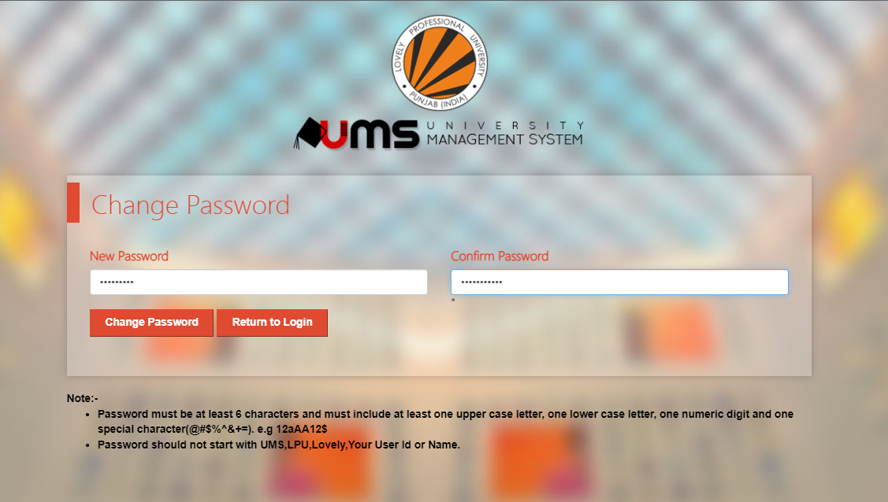

How To Reset Your UMS Password:-
There’s never a wrong time to change your UMS password. It’s always good
to routinely switch your password for security purposes. Furthermore, you
never know when a security breach will occur or if a hacker has
compromised your account behind the scenes.
There are a few ways to reset your UMS account password. The first method
we’ll cover is the easier option, and it works if you’re unable to log in
because you’ve forgotten your password. Here’s how:
STEP 1: OPEN UMS PORTAL
-
Open yourUMS portal and click on forgotten password
- You will get an interface as shown image
-
Enter your REGESTRATION NUMBER and
DOB
- Enter the captch accurately
- click on submit
STEP 2: VISIT MAIL
- Open yourMAIL BOX and check in the spam
- You will receive an mail from the unniversity
- click on the CLICK HERE
-
you will be redirected to the new page, where you can change your
password of the ums
STEP 3: PASSWORD RESET

- Enter your password and reconfirm it
- Click on change password
- It takes a while to update ypur password
-
As soon As the password gets updated you will be taken to ums portal